ボーン工房 使用手引書
- 版: 2.0.0（作成中）
- 日付: 2026-11-02
この手引書は、いま作っています。 画面の新しい版（2.0）に合わせて、はじめから書き直しています。 できた章から、順に載せていきます。
いま読める章
- はじめに（できることと、安心して試せるわけ）
- できること図鑑（悩みから、できることを探す）
- 苦手なこと（買う前に確かめる）
- 入れ方（Unity に入れる）
- はじめての練習（宝箱のふたを開けて、保存する）
- やりたいこと別: 箱の蓋を開け閉めする、本の表紙を開ける、眼鏡のつるを左右いっしょに動かす、リボンをやわらかく曲げる、服のリボンにボーンを足す、動く所を直す、服のほかの所まで動くのを止める、Prefab に保存してアバターで使う
- 画面の説明: 上の帯、かんたん、くわしく
- 困ったとき
- 言葉の一覧
ボーン工房は、Unity の中で、物や服にボーン（ものを動かすための芯）を入れる道具です。 物の上に線を 1 本引くと、ボーンが入ります。 服のリボンや、箱の蓋を動かせるようになります。
はじめに
ボーン工房でできること
ボーン工房は、Unity の中で、ボーンを足す道具です。 ボーンは、ものを動かすための芯（しん）です。 宝箱や服の上に線を 1 本引くと、ボーンが入ります。
服のリボンに、線を 1 本引いて、ボーンを足せる。
服についたリボンを、ゆらしたい。 リボンの垂れに沿って、線を 1 本引きます。 ［曲げてみる］で、垂れが動くのを見られます。
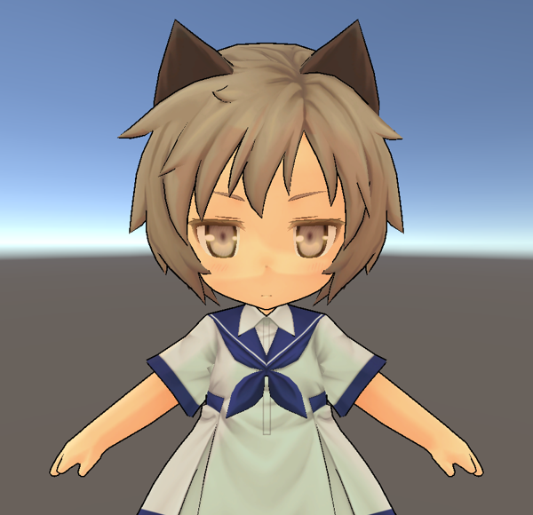
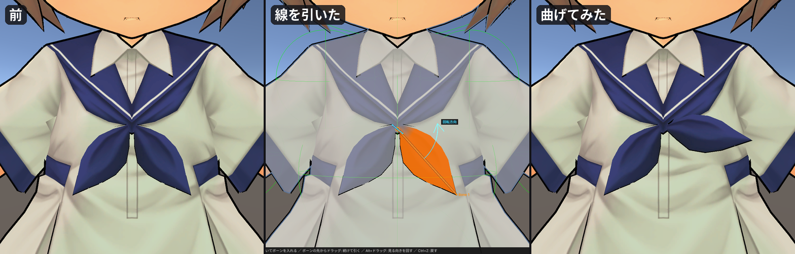
左が前、中が線を引いたところ、右が曲げたところです。 オレンジの所が、ボーンといっしょに動く所です。 動いたのは、線を引いた側の垂れだけでした。
［ボーンを引く］タブで線を引き、［曲げてみる］タブで動かします。 やり方は「服のリボンにボーンを足す」にあります。
気をつけること: 服のほかの所まで動いてしまうことがあります。 そのときは、「服のほかの所まで動くのを止める」で直します。
ゆうこで確認済み
箱のふたが、ちょうつがいで、かたく回る。
ふたを開け閉めできる箱を作るのは、てまがかかります。 ちょうつがい（ふたの回る所）からふたの端へ、線を 1 本引きます。 ふたが、ちょうつがいを中心に開きます。
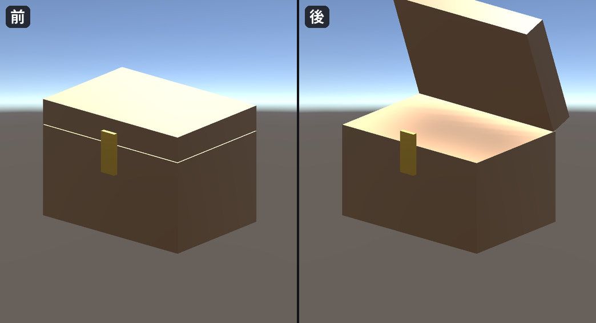
［ボーンを引く］タブの［動き方］で、［かたく回る］を選びます。 やり方は「はじめての練習」にあります。
仕組みは動く
［左右対称］で、片方のつるに線を引くと、両方に入る。
左右のつるに、おなじ線を 2 回引くのはてまです。 ［左右対称］をオンにして、片側のつるに線を引きます。 反対がわのつるにも、おなじボーンが入ります。
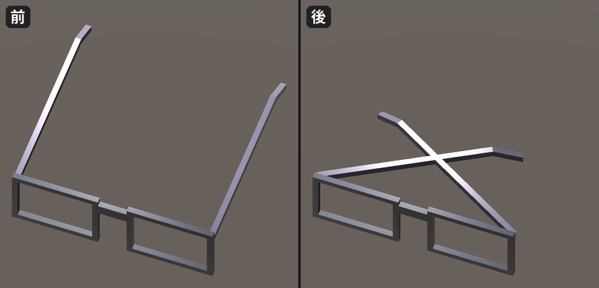
［ボーンを引く］タブの［左右対称］を使います。 やり方は「眼鏡のつるを左右いっしょに動かす」にあります。
仕組みは動く
ほかにできることは、写真つきで「できること図鑑」にまとめます。
安心して試せます
- 編集するのは、複製（元のものをコピーした、編集用のもの）です。
- 元のものは、かくすだけで、変わりません。
- まちがえたときは、Ctrl+Z で戻せます。
- ［Prefab に保存］で作ったファイルは、Ctrl+Z では戻せません。いらなければ、Project（Unity の下にある、ファイルの一覧）で消します。
- 曲げてみた形は、保存されません。
- 保存されるのは、［Prefab に保存］か、保存するかを聞かれて［保存］を押したときだけです。
保存しないまま、ほかのものを選ぶとします。 すると、「保存しますか？」と聞かれます。 Play を押したときも、おなじです。 窓を閉じるときも、保存するかを聞かれます。 ［保存しない］を押すと、複製を消して、元のものを表示に戻します。 一度保存したあとは、複製はシーンに残ります。 かくした元のものは、Hierarchy（Unity の左にある、置いてあるものの一覧）で表示に戻せます。
必要なもの
- Unity 2022.3。
- ボーンを足したいものか、服。練習用のものも、窓から出せます。
- VRChat SDK などは、なくても使えます。
かかる時間
はじめての練習は、10 分ほどを見込んでいます（目安です。測り直しています）。
先に知っておく言葉
この手引書では、次の言葉を使います。 「言葉の一覧」にも、おなじ説明を載せています。
- ボーン（ものを動かすための芯）。
- 動く所（ボーンといっしょに動く、ものの部分）。
- ちょうつがい（ふたや扉が回る所）。
- 左右対称（片側の操作を、反対がわにもおなじようにすること）。
- Prefab（作ったものを、ひとまとめに残しておくファイル）。
画像の見方
画像の赤い枠と数字は、押す場所です。 数字は、手順の番号とおなじです。
画像のモデル
画像のキャラクターは、SD こはくちゃんズの「ゆうこ」です。
© Unity Technologies Japan/UCL
できること図鑑
ボーンを足したいけれど、むずかしそう。 そんなときの、悩み別の一覧です。 ボーン工房は、線を 1 本引いて、ボーンを足します。 気になる悩みから、読んでください。
箱のふたが、ちょうつがいで回る。
ふたを開け閉めできる箱にしたい。 ちょうつがいから、ふたの端へ、線を 1 本引きます。 ふただけが、ちょうつがいを中心に開きます。
［ボーンを引く］タブの［動き方］で、［かたく回る］を選びます。 やり方は「箱の蓋を開け閉めする」にあります。
仕組みは動く
本の表紙だけが、背を中心に開く。
表紙と背がつながった本は、表紙だけを動かせない。 背から表紙の端へ、線を 1 本引きます。 表紙だけがオレンジになり、開きます。
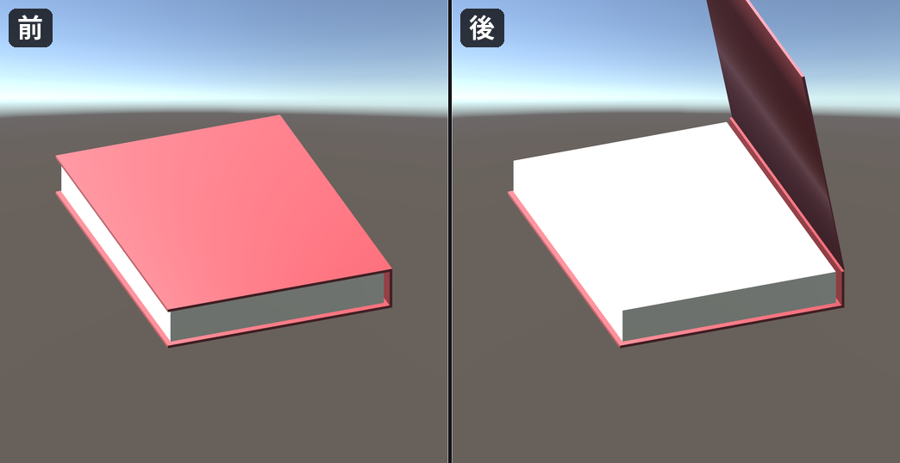
［曲げてみる］タブの［回る軸の向き］で、開く向きを直せます。 やり方は「本の表紙を開ける」にあります。
気をつけること: 練習用の本で試しました。自分の本は、分かれ方が変わることがあります。
仕組みは動く
［左右対称］で、片方のつるに線を引くと、両方に入る。
左右のつるに、同じ線を 2 回引くのは手間です。 ［左右対称］をオンにして、片方のつるに線を引きます。 反対のつるにも、同じボーンが入ります。
［ボーンを引く］タブの［左右対称］を使います。 やり方は「眼鏡のつるを左右いっしょに動かす」にあります。
仕組みは動く
リボンが、やわらかく曲がる。
リボンは、1 か所では折れずに、しなやかに曲げたい。 先のボーンから続けて引くと、ボーンがつながります。 つなぎ目で、なめらかに曲がります。
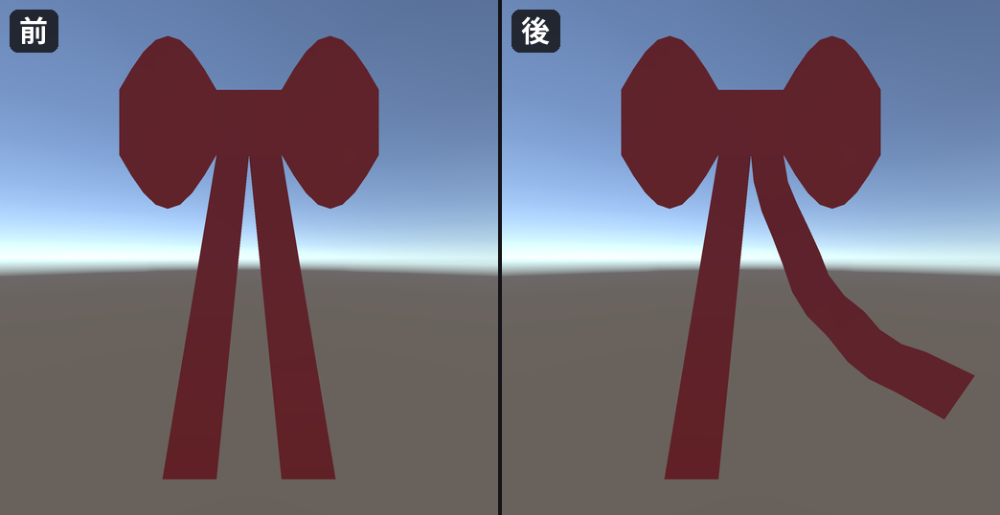
［ボーンを引く］タブで、ボーンの先から続けて引きます。続けて引いたボーンは［やわらかく曲がる］になります。 やり方は「リボンをやわらかく曲げる」にあります。
気をつけること: 揺れる動きは作りません。曲がり方を確かめるまでです。
仕組みは動く
服のリボンに、ボーンを足せる。
服についたリボンは、服といっしょに動いてしまう。 垂れに沿って線を 1 本引くと、垂れだけが動く所になります。 もとのボーンは、残ります。
［ボーンを引く］タブで線を引き、［曲げてみる］タブで動かします。 やり方は「服のリボンにボーンを足す」にあります。
気をつけること: 確かめたのは、ゆうこの胸のリボンです。スカートなどは、試していません。
ゆうこで確認済み
動く所を、あとから直せる。
オレンジの所が合わないときは、部品をクリックして、足す・外す。 ブラシでなぞって、直すこともできます。 ［動く所］タブを使います。 「動く所を直す」を見てください。
服のほかの所まで、動かない。
リボンに線を引いたら、シャツまで動いてしまう。 動く所を、自動で分けるか、囲むか、境目の線で止めます。 ボーンを引いた所だけが、動く所になります。
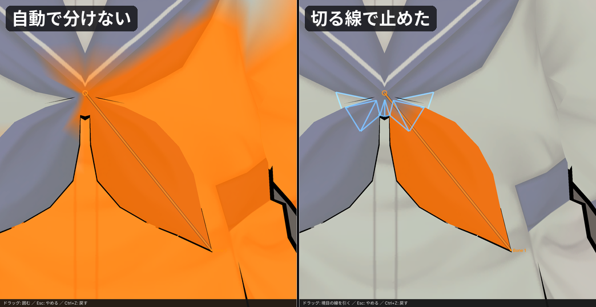
［動く所］タブの「自動で分ける」・［囲む］・［切る］を使います。 やり方は「服のほかの所まで動くのを止める」にあります。
ゆうこで確認済み
ボーンを足した物を、Prefab に残せる。
足したボーンを、あとでも使いたい。 ［Prefab に保存］を押すと、新しいフォルダーに残ります。 元の物は変わりません。
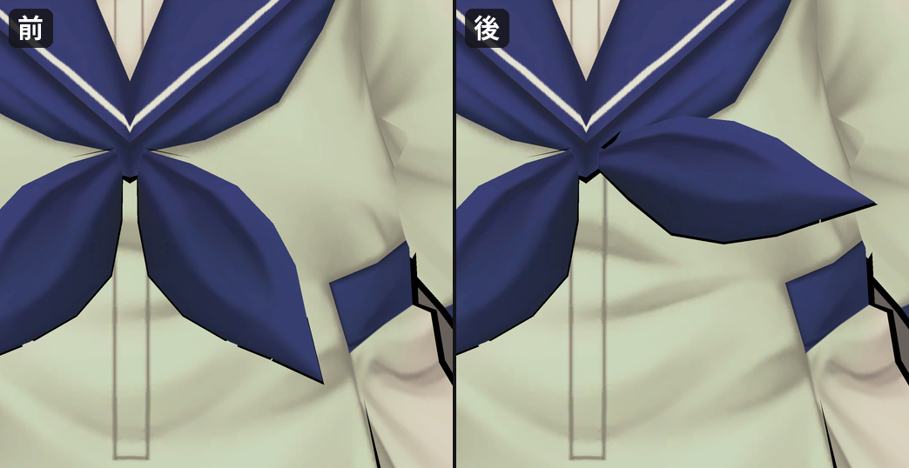
［保存］タブの［Prefab に保存］を使います。 やり方は「Prefab に保存してアバターで使う」にあります。
ゆうこで確認済み
できないことは、先に「苦手なこと」で確かめてください。
苦手なこと
ボーン工房にも、苦手なことがあります。 買う前に、ここで確かめてください。 多くは、Unity のほかの機能と組み合わせて補えます。
動きと揺れ
- ふたの開け閉めなどのアニメーションは、作りません。 曲がるボーンを足すまでが仕事です。 動きは、Unity のアニメーションで作ります。
- 揺れ（PhysBone など）は、作りません。 VRChat の揺れの設定は、使う人が足します。
- ［曲げてみる］で曲げた形は、保存されません。 保存のときは、元の形に戻します。
動く所
- 動く所は、自動で決まります。 いつも思いどおりとは限りません。 ［動く所］タブで、直します。
- 長い線を、折れ曲がった布の上で引くと、動く所の一部が抜けることがあります。 ブラシで足します。
- 服のポーズやシェイプキーを変えると、線やブラシの当たる所がずれることがあります。
- 元のボーンが何本かついている所は、アバターが元の姿勢と違うポーズのとき、少し動くことがあります。
扱える物
- 2 つの服は、同時には編集できません。
- モデルの Read/Write が切れていると、形を読めません。 Import Settings で Read/Write に印を付けて、［Apply］を押し、引き直します。
- 服で確かめたのは、ゆうこの胸のリボンだけです。 スカートなどは、試していません。 練習用の本・眼鏡・リボンで試した動きも、自分の物では変わることがあります。
全部おまかせではないこと
- ［人型］タブのボーンは、出発点です。 関節の位置と、動く所の強さは、あとで直します。 Generic のモデルには使いません。
配る・使う
- 保存した Prefab とメッシュ（ものの形をつくる、面の集まり）には、元のモデルの形が入っています。 ほかの人のモデルは、許しを得ずに配らないでください。
- VRChat にアップロードしたときの動きは、確かめていません。 ボーンを足すと、パフォーマンスランクに響くことがあります。 ランクを測ったり、軽くしたりは、しません。
- この手引書は、日本語だけです。 窓の文字は、English と 한국어 にも替えられます。
できることは、「できること図鑑」にあります。
入れ方
ボーン工房は、Unity 2022.3 で使えます。 VRChat SDK は、入っていなくても動きます。 ここでは、版 2.0.0 の入れ方を書きます。
始める前に
- ボーンを入れたいプロジェクトを、Unity で開いておきます。
- ダウンロードした ZIP ファイルを、解凍しておきます。
ツールを手に入れる
ボーン工房は、BOOTH で配ります。
買ったら、ZIP ファイルをダウンロードして、解凍します。
できたフォルダを開きます。
中に .unitypackage のファイルがあるか、確かめます。
無いときは、ダウンロードし直します。
取り込んだあとは、ZIP ファイルも解凍したフォルダも、消してかまいません。
Unity に入れる
-
.unitypackageを、Unity の画面へドラッグします。 メニューの［Assets > Import Package > Custom Package...］を使っても、同じです。 -
「Import Unity Package」の窓が開きます。 一覧のすべてに、印が付いています。 そのまま、右下の［Import］を押します。
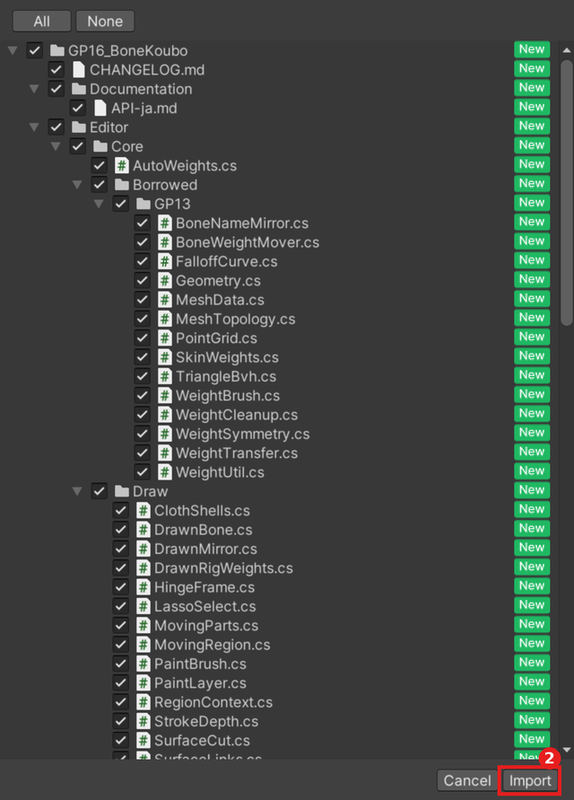
-
Unity の読み込みが終わるまで待ちます。 右下にくるくる回る印が出ている間は、読み込み中です。
入ったことを確かめる
-
Project の窓の、
Assetsの中を確かめます。GP16_BoneKouboフォルダが出ていれば、入っています。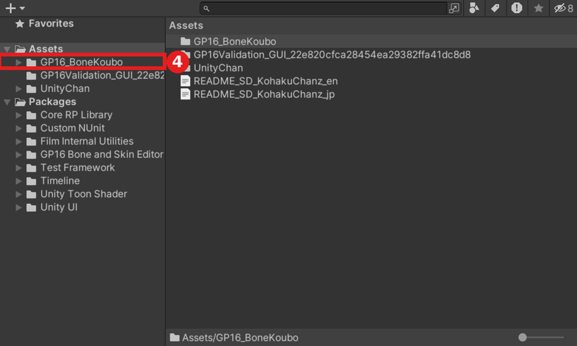
画像には、ほかのフォルダも写っています。 中身はプロジェクトによって違います。
-
Unity のメニューで、［Tools > Bone Koubo > Open］を押します。
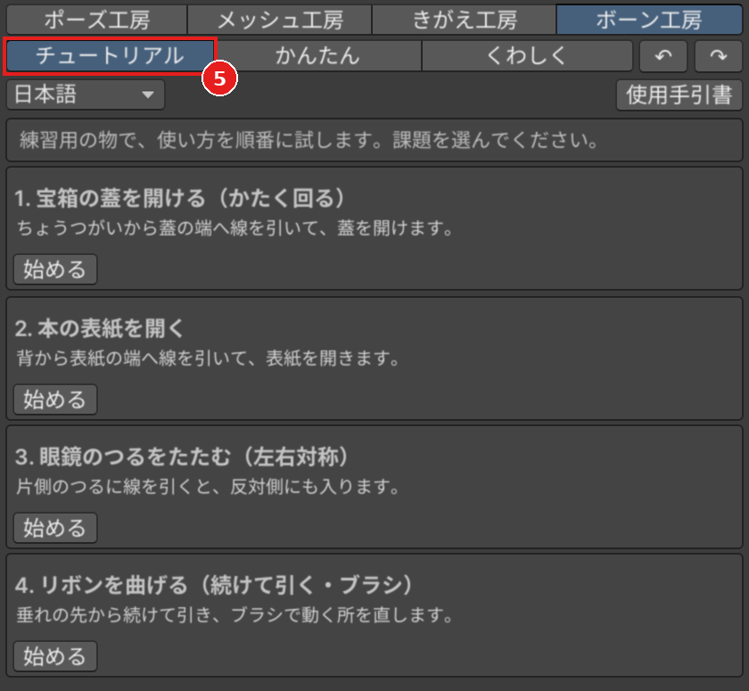
窓の［ボーン工房］が開きます。 上の帯の［チュートリアル］から始まれば、入っています。 続きは、はじめての練習です。 フォルダや窓が出ないときは、困ったときを見てください。 赤いエラーが出たときも、同じです。
バージョンアップするとき
前の版を入れたことがあるときは、先に古い導入先を消します。
Project の窓で、Assets の中の GP16_BoneKoubo フォルダを右クリックします。
［Delete］を押します。
そのあと、上と同じ手順で、新しい版を取り込みます。
消さずに取り込むと、古いファイルが残ります。 動かなくなることがあります。
古い版で Assets/GP16 に入れていたときは、まず、保存したデータを移します。
そのあと、Assets/GP16 を消します。
それから、新しい版を入れます。
［Prefab に保存］の保存先は、はじめは Assets/BoneKoubo です。
GP16_BoneKoubo とは別のフォルダなので、消えません。
［変える］で GP16_BoneKoubo の中を保存先にしたときは、先に移します。
はじめての練習
練習用の宝箱に線を 1 本引いて、ふたを開けて、保存します。 練習なので、てもとのデータは使いません。 窓から出せます。 もとの宝箱は、かくれるだけで、かわりません。
まず、宝箱を出します
-
Unity のメニューで、［Tools > Bone Koubo > Open］を押します。
窓の［ボーン工房］が開きます。 上の帯の［チュートリアル］がひかり、課題が 4 つならびます。
-
「1. 宝箱の蓋を開ける（かたく回る）」の［始める］を押します。
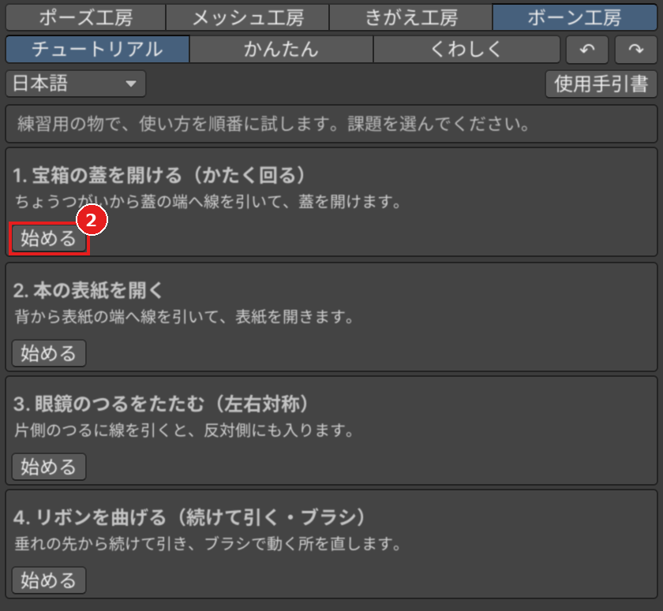
シーンビュー（Unity の真ん中にある、ものを見る画面）に、宝箱が出ます。 見る向きは、自動で［横から］になります。 ［編集する物］の欄の下に、操作ガイドが出ます。 ガイドの番号は、この章の手順の番号とは別です。
つぎに、線を引きます
-
シーンビューで、点線の「ここから」から「ここまで」へ、点線の上を、なぞるようにドラッグします。
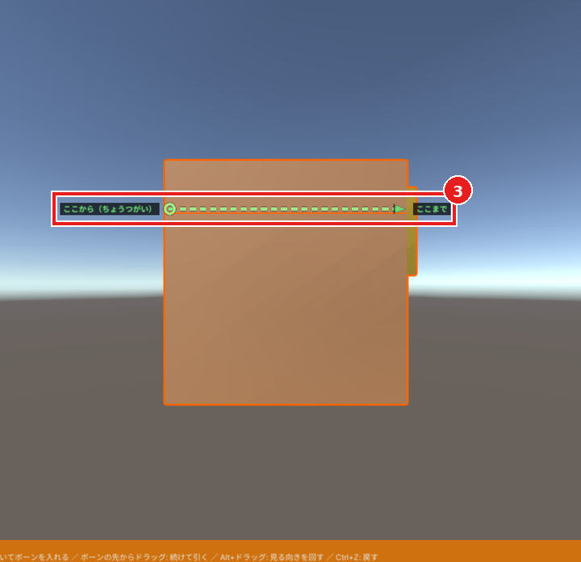
ボーンが 1 本、入ります。 動く所はオレンジ、動かない所は灰色で出ます。 このとき、元の宝箱はかくれて、複製が編集用になります。 線が短すぎると、入りません。 もう少し長く引きます。
ふたを開けてみます
-
窓の［曲げてみる］タブを押します。
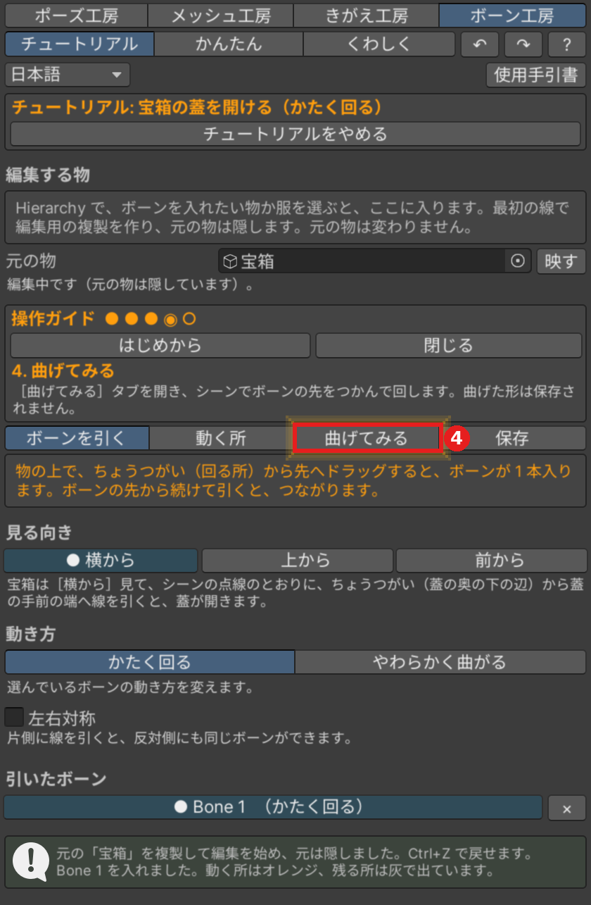
-
シーンビューで、ボーンの先（「Bone 1」の札が出ている所）をつかんで、水色の矢印の向きへドラッグします。
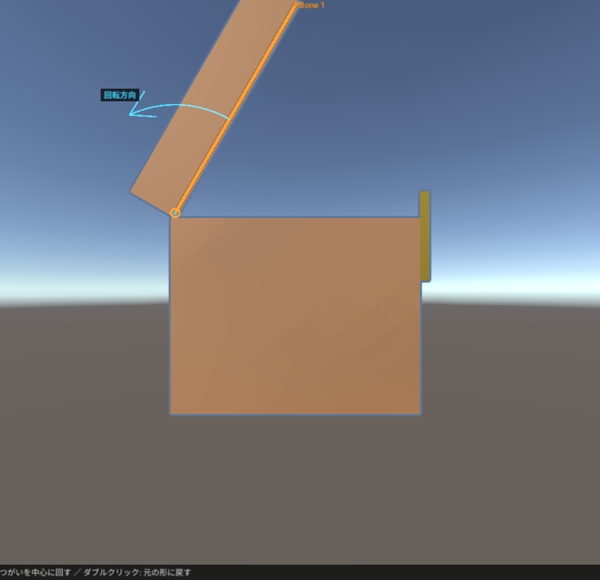
水色の矢印は、ふたが上へ開く向きです。 ふたが、ちょうつがいを中心に開きます。 窓の［角度］のスライダーでも、動かせます。 ダブルクリックすると、元の形にもどります。 曲げた形は、保存されません。
保存します
-
窓の［保存］タブを押します。
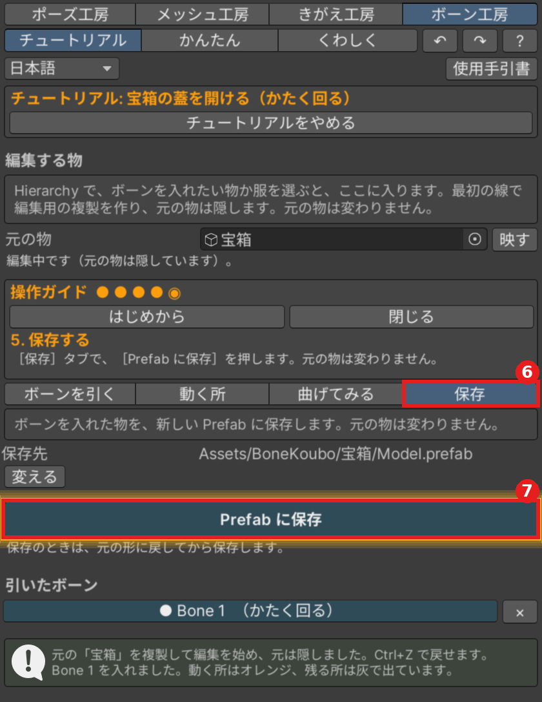
-
［Prefab に保存］を押します。
曲げた形は、元にもどしてから保存されます。
保存できると、窓に「保存しました: …」と出ます。
［保存先］に出ているばしょに、保存されます。
保存先の Assets/BoneKoubo は、入れた先の GP16_BoneKoubo とは別のフォルダです。
おなじ名前のフォルダーがあるときは、名前に番号が付きます。
「宝箱」という名前のフォルダーができ、その中に Prefab（Model.prefab）とメッシュが入ります。
-
窓に出た［Project で見る］を押します。
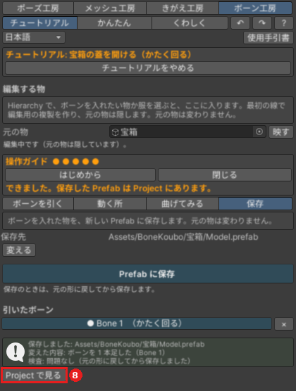
Project で、保存した Prefab がひかります。
結果を見ます
左がとじたふた、右が開けたふたです。

終わるとき
やめるときは、窓の上の［チュートリアルをやめる］を押します。 宝箱と引いたボーンは、そのままのこります。 このとき、「保存しますか？」とは聞かれません。 まだ保存はされていません。 保存しないでやめるなら、そのあと［ボーン工房］の窓を閉じて、［保存しない］を押します。 保存したあとに窓をとじると、複製はシーンにのこります。 元の宝箱はかくれたままです。Hierarchy で表示に戻せます。 うまくいかないときは、「困ったとき」を見てください。
箱の蓋を開け閉めする
箱のふたを、ちょうつがいで開け閉めしたい
箱のふたは、ちょうつがい（ふたの回る所）を中心に、かたく回ります。 かたく回るとは、ふたの形を変えずに、そのまま回ることです。 この章は、練習用の宝箱で説明します。 自分の箱でも、手順は同じです。 宝箱の出し方は、「はじめての練習」にあります。 自分の箱は、シーンに置いて、Hierarchy で選びます。
見る向きと動き方を決めます
-
窓の［ボーンを引く］タブを押します。
-
［見る向き］で、ちょうつがいの棒が画面の奥へ向くボタンを押します。 宝箱は、［横から］です。
-
［動き方］で、［かたく回る］を選びます。 初めから選ばれています。
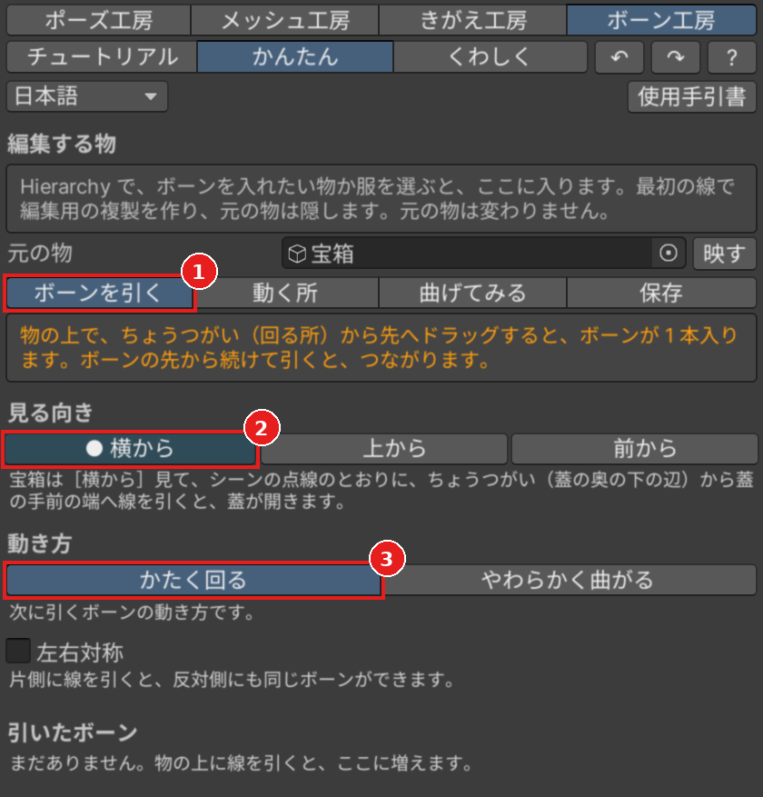
ふたは、ちょうつがいの棒を中心に回ります。 その棒を、画面の奥へ向けるのが決まりです。 ボタンで合わないときは、Alt を押しながらドラッグして、見る向きを回します。
線を引きます
-
シーンビューで、ちょうつがいから、ふたの端へ、ドラッグします。
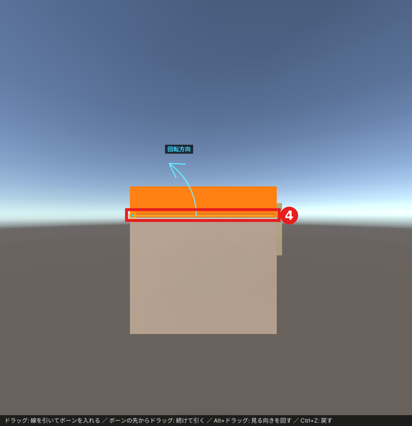
引き始めが、回る中心になります。 線の奥行きは、見ている向きの、物の真ん中に入ります。 最初の線で、箱の複製ができ、元の箱は隠れます。 Ctrl+Z で戻せます。
ふただけがオレンジなら、うまくいっています。 本体は、灰色のままです。
開けてみます
-
窓の［曲げてみる］タブを押します。
-
ボーンの先をつかんで、ふたが開く向きへドラッグします。
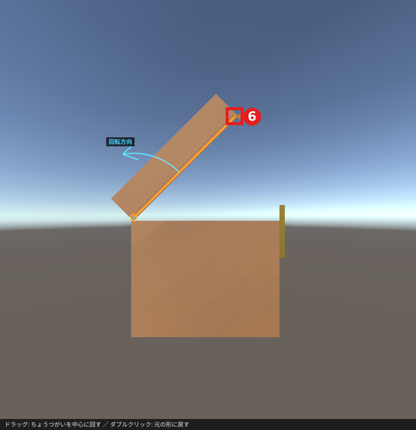
左が閉じたふた、右が開けたふたです。斜めから写しています。
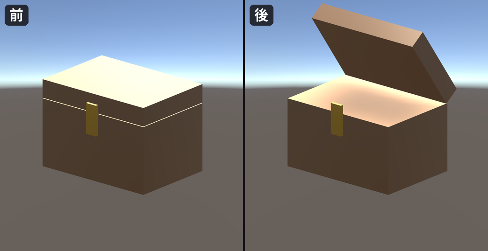
曲げた形は、保存されません。 保存するときは、「はじめての練習」の手順 6 からと同じです。
うまくいかないとき
- 箱ぜんたいがオレンジになる: ふたと本体が、つながった 1 つの部品かもしれません。 Ctrl+Z で戻して、見る向きを合わせて、引き直します。 直らなければ、［動く所］タブの［部品ごと］や［切る］で直します。 やり方は、「動く所を直す」と「服のほかの所まで動くのを止める」にあります。
- 思った向きに開かない: 見る向きが、ちょうつがいの棒とずれています。 Ctrl+Z で線を戻して、見る向きを変えて引き直します。 「本の表紙を開ける」の［回る軸の向き］でも直せます。
- ボーンが入らない: 線が短いか、物の上を通っていません。 短いときは、「線が短すぎます。ちょうつがい（回る所）から先へ、もう少し長くドラッグしてください。」と出ます。 物の上を通っていないときは、「線が物の上を通っていません。」と出ます。 物の上で、ちょうつがいから先へ、長く引き直します。
- 動く所が多い、または少ない: 「動く所を直す」で直します。
本の表紙を開ける
本の表紙を、背を中心に開けたい
本の表紙と背は、つながった 1 つの部品です。 箱のように、ふたが別の部品になっていません。 それでも、背から表紙の端へ線を引くと、表紙のがわだけが動く所になります。 この章は、練習用の本で説明します。 本の出しかたは、「はじめての練習」の宝箱とおなじです。 練習用の物の［本］を押します。
背から表紙の端へ引きます
-
窓の［ボーンを引く］タブで、［見る向き］の［前から］を押します。
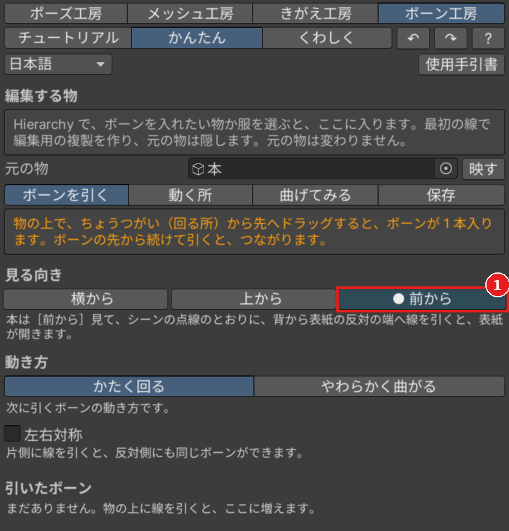
背の長い向きが、画面の奥へ向く向きです。 本では、［前から］が合っています。
-
シーンビューで、背の上のかどから、表紙のはんたいのはしへ、ドラッグします。
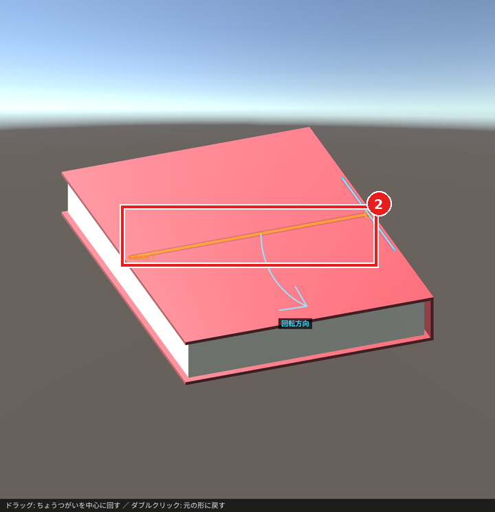
この画像は、見やすいように、ななめからうつしています。 ［前から］だと、表紙が細い線に見えます。
すると、表紙だけがオレンジになります。
-
窓の［曲げてみる］タブを押します。
-
シーンビューで、ボーンの先をつかんで、表紙が開く向きへドラッグします。
表紙が開きます。 背とうら表紙と、中のページは動きません。 ［角度］のスライダーでも、動かせます。 ［前から］引いたとき、表紙が上へ開くのは、［角度］がマイナスの向きです。
左がとじた表紙、右が開いた表紙です。ななめからうつしています。
ちがう向きで引いたとき
見る向きをまちがえて引くと、表紙が背とはちがう向きに回ります。 引きなおさなくても、回る軸の向きをかえれば、なおります。 回る軸は、シーンに水色の線で出ます。 たとえば、［上から］で引いたときは、［回る軸の向き］を 90 にすると、軸が背にそろいます。
-
窓の［曲げてみる］タブで、［回る軸の向き］のスライダーを動かします。 水色の線が背の向きにそろったら、手をはなします。
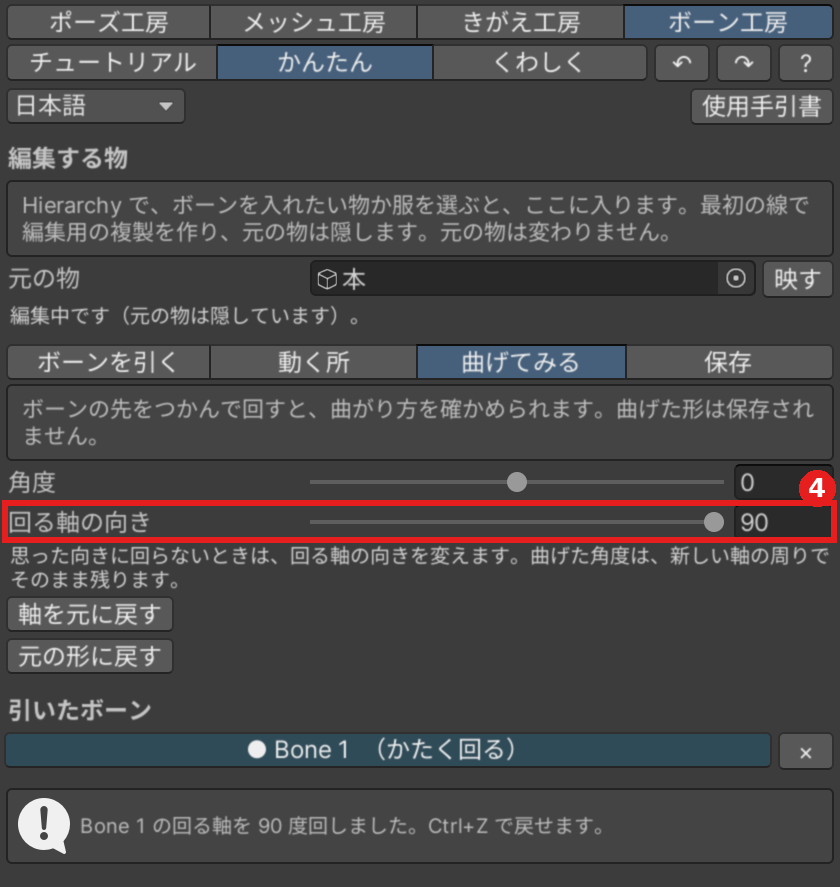
手をはなすと、向きが決まります。 Ctrl+Z を 1 回押すと、もとの向きにもどります。 ［軸を元に戻す］でも、引いたときの向きにもどせます。 スライダーのはんいは、-90 度から 90 度です。 そのあと、［角度］のスライダーで、表紙が背を中心に開くのをたしかめます。
気をつけること
- 表紙だけがオレンジにならないとき: 「動く所を直す」で、オレンジの所を直します。
- 表紙がほかの部品の本は、「箱の蓋を開け閉めする」とおなじ引き方です。
- 練習用の本で試しました。自分の本は、形によって分かれ方が変わることがあります。
眼鏡のつるを左右いっしょに動かす
眼鏡のつるを、左右いっしょに動かしたい
左右のつるに、おなじ線を 2 回引くのは、てまがかかります。 ［左右対称］をオンにすると、片方に線を引くだけで、反対がわにもおなじボーンが入ります。 物の左右のまんなかでおりかえして、反対がわにおなじ線を引くからです。 ［左右対称］は、はじめはオフです。 この章は、練習用の眼鏡で説明します。 眼鏡の出し方は、「はじめての練習」の宝箱とおなじです。 練習用の物の［眼鏡］を押します。
左右対称をオンにします
-
窓の［ボーンを引く］タブで、［見る向き］の［上から］を押します。
-
［左右対称］をオンにします。
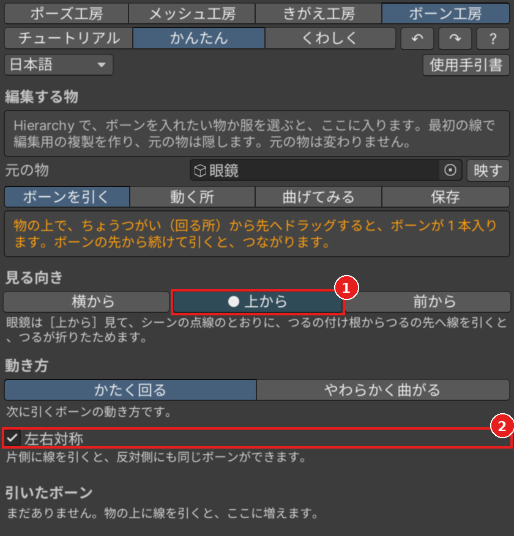
シーンの下の行に、「左右対称: オン」と出ます。 練習の［チュートリアル］の眼鏡は、はじめからオンです。
片方のつるに線を引きます
-
シーンビューで、画面の右のつるのつけ根から、つるの先へ、ドラッグします。
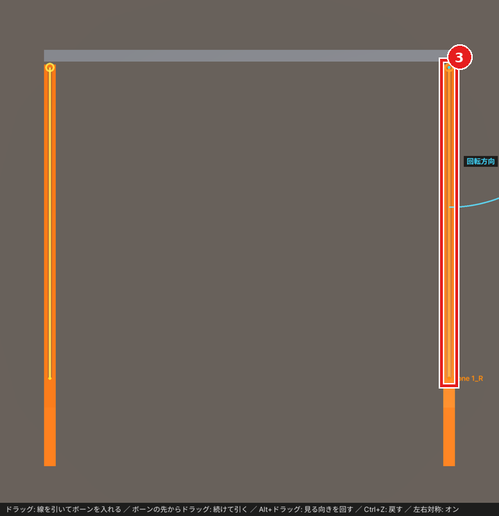
ボーンが 2 本入ります。 画面の右のつるが「Bone 1_R」、反対のつるが「Bone 1_L」です。 窓の下に、「Bone 1_R と、左右の反対側に Bone 1_L を入れました。」と出ます。 ［引いたボーン］の一覧にも、2 本が出ます。 Bone 1_R が先にならびます。
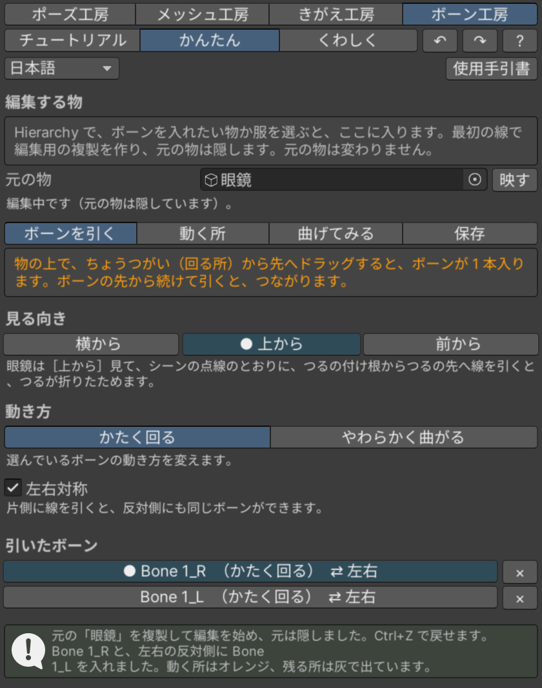
ふち（レンズのまわり）は、灰色のままです。 両方のつるだけが、オレンジになります。
左右を曲げます
-
窓の［曲げてみる］タブを押します。
-
片方のボーンの先をつかんで、つるがうちがわへ折れる向きへ、ドラッグします。 反対がわのボーンも、おなじようにします。
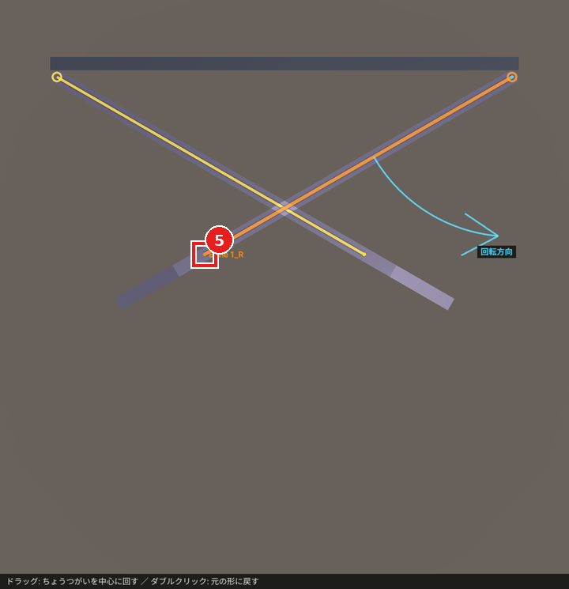
曲げるのは、1 本ずつです。 おなじ角度にすると、左右が鏡のように動きます。
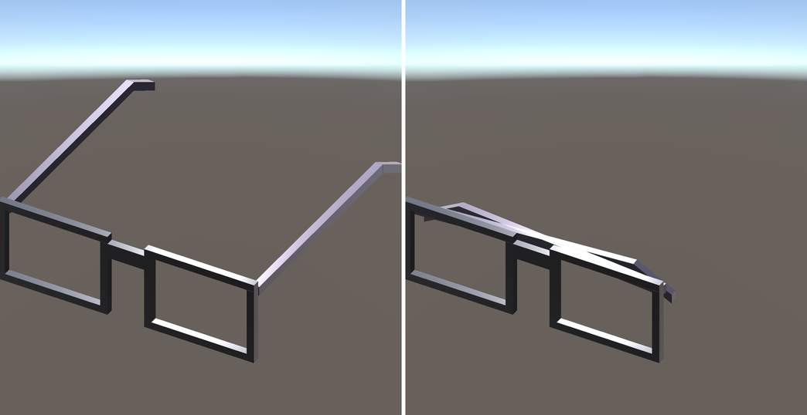
左が前、右がつるを折りたたんだところです。斜めから写しています。
気をつけること
- Ctrl+Z を 1 回押すと、2 本とも消えます。 一覧の×で消すときも、あいてがいっしょに消えます。
- 左右のまんなかに引いた線は、1 本だけ入ります。 おりかえしても、おなじばしょになるからです。
- つづけて引いた元のボーンに左右のあいてがないと、反対がわには入りません。 そのときは、窓にそう出ます。
- 練習用の眼鏡で試しました。自分の物は、物の原点（X = 0）が、左右のまんなかにあるかを、見てください。 服のときは、アバターの根の X = 0 です。
リボンをやわらかく曲げる
リボンを、やわらかく曲げたい
リボンの垂れは、ひと続きの布です。 箱のふたのように、1 か所では折れません。 ボーンを何本かつなげると、つなぎ目でなめらかに曲がります。 これを、やわらかく曲がる、と呼びます。 先のボーンから続けて引くと、ボーンがつながります。 この章は、練習用のリボンで説明します。 練習用の物の［リボン］を押します。 服のリボンは、「服のリボンにボーンを足す」を見てください。
動き方を選びます
-
窓の［ボーンを引く］タブで、［見る向き］の［前から］を押します。
-
［動き方］で、［やわらかく曲がる］を選びます。
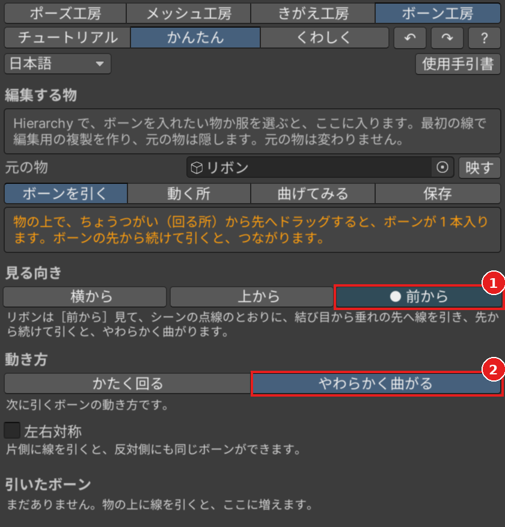
はじめに選んでおくと、1 本目から、やわらかく曲がります。 選ばなくても、先から続けて引いたボーンは、自動で［やわらかく曲がる］になります。
3 本、続けて引きます
-
シーンビューで、垂れの根元から、垂れの 3 分の 1 ほどまで、ドラッグします。
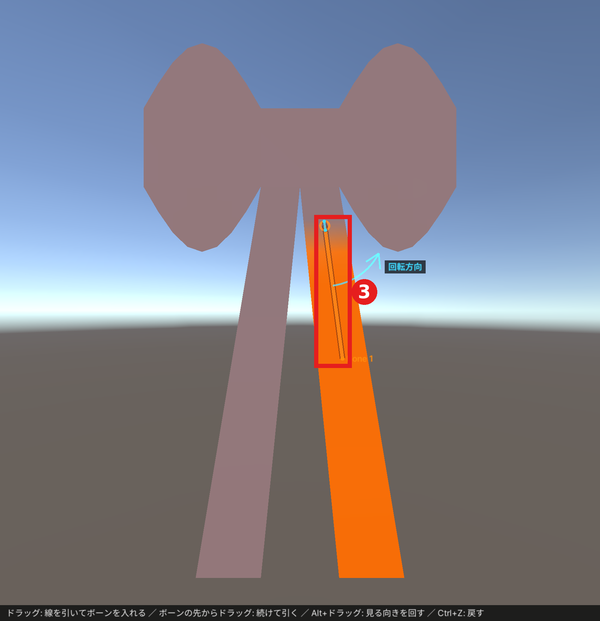
-
ボーンの先から、ドラッグして、続けて引きます。 同じことを、もう 1 回、くり返します。
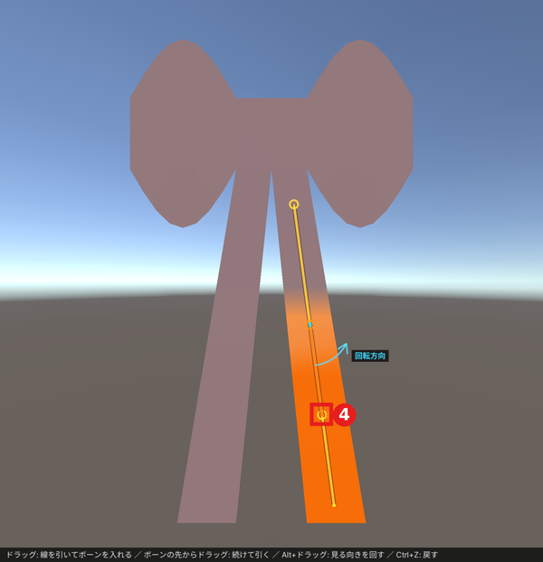
窓に、「Bone 3 を、Bone 2 の先につなげて入れました（やわらかく曲がる）。」のように出ます。 ［引いたボーン］の一覧に、3 本が並びます。 引いた側の垂れが、オレンジになります。 点線は、1 本目を引くと消えます。
下の窓は、1 本目を［かたく回る］のまま引いたときです。 2 本目と 3 本目は、［やわらかく曲がる］になっています。 曲がり方は、ほとんど同じです。 違うのは、1 本目の根元の境目です。 ［かたく回る］だとくっきりして、［やわらかく曲がる］だとなじみます。
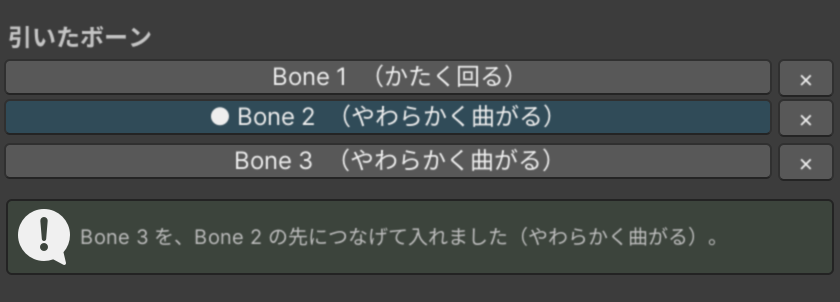
曲げます
-
窓の［曲げてみる］タブを押します。
-
シーンビューで、いちばん先のボーンの先をつかんで、少し曲げます。
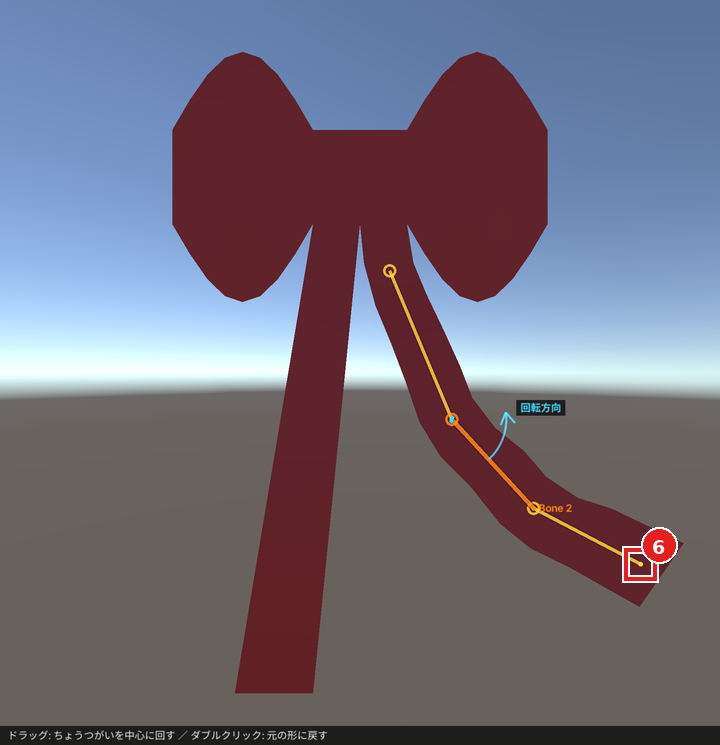
ほかのボーンも、先をつかんで、少しずつ曲げます。 根元のボーンを回すと、先のボーンもついてきます。 ［角度］のスライダーでも、動かせます。 3 本を少しずつ曲げると、垂れがなめらかに曲がります。
左が前、右が曲げたあとです。
気をつけること
- 反対の垂れ: ［左右対称］をオンにして引くと、反対にも同じ 3 本が入ります。 「眼鏡のつるを左右いっしょに動かす」を見てください。
- 垂れの先が曲がらない、結び目まで動く: 「動く所を直す」で、ブラシで直します。
- 練習用のリボンで試しました。ほかのリボンは、形によって動き方が変わります。
服のリボンにボーンを足す
服についたリボンの垂れ（たれ）に、線を 1 本引いて、ボーンを足します。 ここでは、ゆうこの夏服の、胸のリボンを使います。 ゆうこのリボンには、もとからボーンがあります。 それは残したまま、足します。
始める前に
- ゆうこ（SD こはくちゃんズ）を、Unity に入れておきます。ゆうこは、Humanoid（人の形のボーンの決まり）のモデルです。
- Project の窓で、ゆうこの Prefab（
Yuko_sum_humanoid）を探します。Hierarchy へドラッグして、置きます。 - 宝箱に引いたボーンを、保存していないとします。ゆうこの服を選ぶと、「保存しますか？」と聞かれます。宝箱を残さないなら、［保存しない］を押します。
- ［かんたん］を押すと、チュートリアルは終わります。
服を選びます
-
窓の上の帯で、［かんたん］を押します。
-
Hierarchy で、
Yuko_sum_humanoidの左の ▶ を押します。 -
ゆうこの下の、
_body_summerを選びます。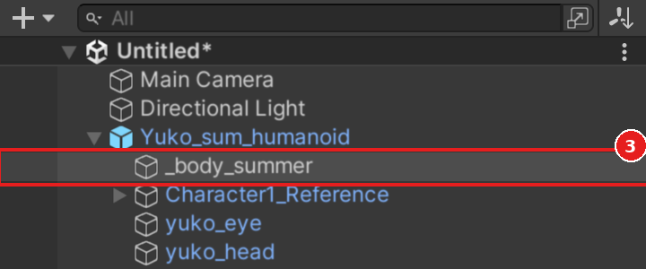
窓の［編集する物］の欄に、「服の一部」と出ます。 説明の文も出ます。 服は、すでに体のボーンについているからです。 線を引くと、アバターごと複製して、複製のほうを編集します。 元のアバターは隠れるだけで、変わりません。
線を引きます
-
［ボーンを引く］タブで、［前から］を押します。 リボンが大きく見えるまで、マウスのホイールで寄ります。 ［動き方］は、初めから［かたく回る］が選ばれています。 そのままでかまいません。
-
シーンビューで、リボンの結び目から、垂れの先へドラッグします。 左右どちらの垂れでもかまいません。 画像は、画面の右の垂れの例です。
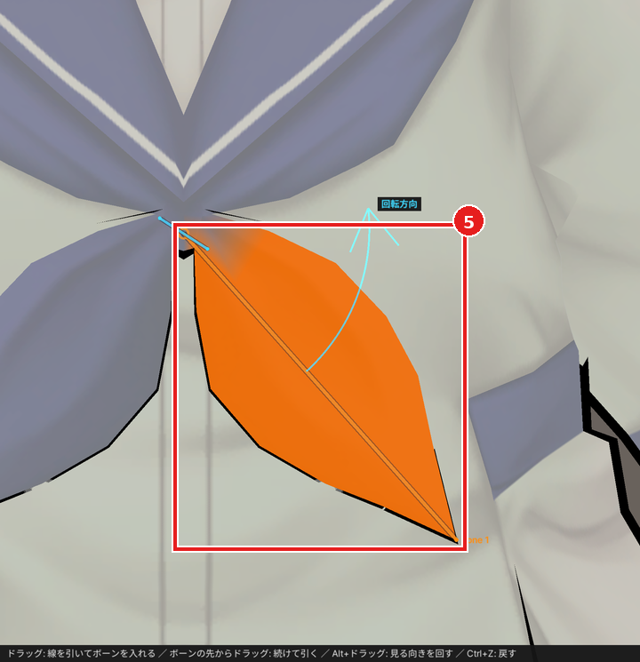
ボーンが 1 本入ります。 そのリボンの垂れだけが、オレンジになります。 シャツには、広がりません。 窓の［引いたボーン］の見出しのすぐ下（一覧の上）に、「土台のボーン」が出ます。 土台のボーンは、足したボーンのつながり先です。 その服の、もとのボーンの 1 本です。線の引き始めを、いちばん強く動かしていたボーンになります。 ゆうこの胸のリボンでは、「Character1_Spine2」です。 もとからあるリボンのボーン（Ribbon_L と Ribbon_R）は、残ったままです。
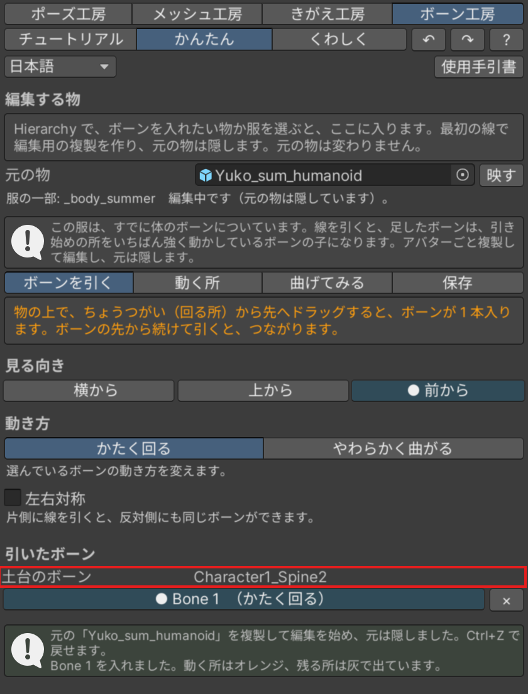
線が短すぎると、入りません。 もう少し長く引きます。
動かしてみます
-
［曲げてみる］タブを押します。
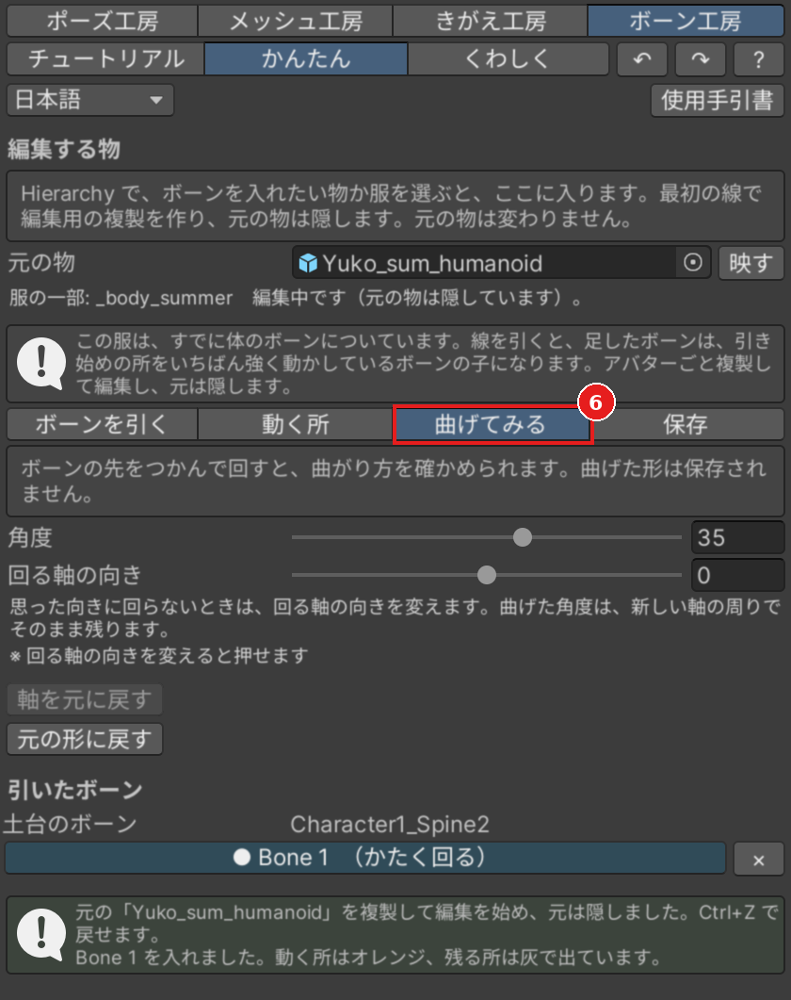
-
シーンビューで、ボーンの先をつかんで、ドラッグします。
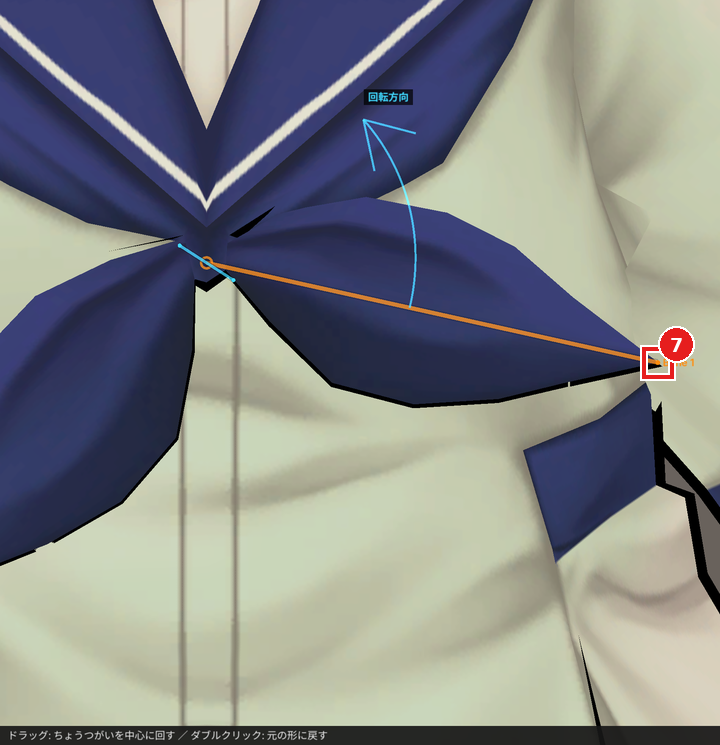
引いた側の垂れだけが動きます。 反対の垂れと、服のほかの所は、動きません。 曲げる向きは、どちらでもかまいません。 ほかの所まで動くときは、「服のほかの所まで動くのを止める」を見てください。 曲げた形は、保存されません。
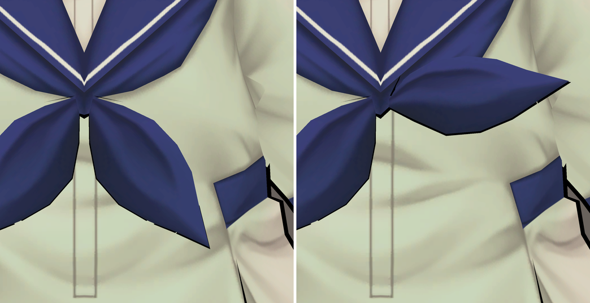
左が曲げる前、右が曲げたあとです。
保存します
-
［保存］タブで、［Prefab に保存］を押します。
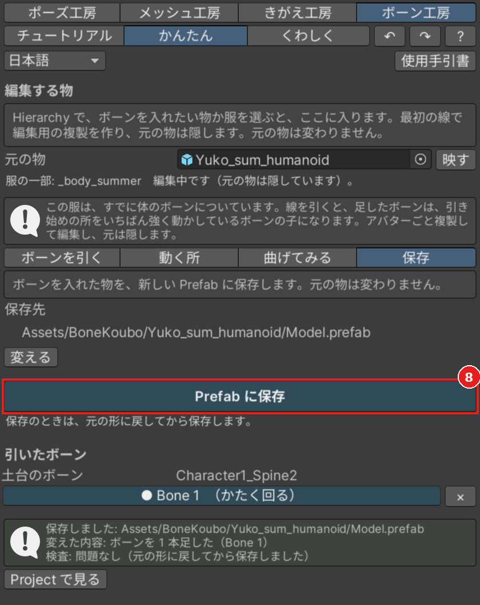
アバターごと、新しい Prefab になります。 保存の手順は、「Prefab に保存してアバターで使う」にあります。
アバターの根を選んだとき
アバターの根を選ぶと、窓に「ボーンの入ったメッシュが複数あります。」と出ます。 そのときは、Hierarchy で、ボーンを足したい服（や体）のメッシュを選びます。
できないこと
- ゆうこの夏服の、胸のリボンで確かめました。スカートなど、ほかの服では、確かめていません。
- ポーズやシェイプキーを変えると、線が当たる所がずれることがあります。
- 1 つのアバターで、2 つの服を同時には編集できません。
左右の垂れにいっしょに入れたいときは、［左右対称］を使います。 やり方は、「眼鏡のつるを左右いっしょに動かす」にあります。
動く所を直す
ボーンを足すと、ボーンといっしょに動く所が、オレンジで出ます。 それが思った所と違うときは、ここで直します。 直し方は 2 つあります。 部品をクリックして足す・外す方法と、ブラシでなぞる方法です。
ボーンを選びます
-
窓の［動く所］タブを押します。
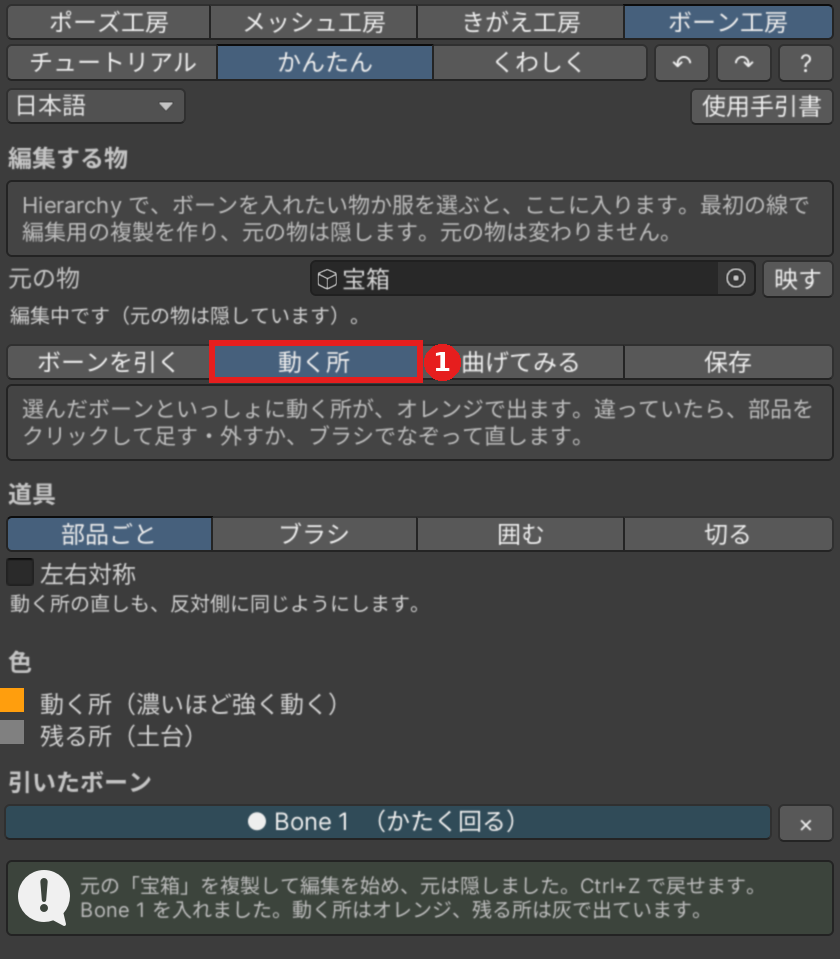
-
下の一覧か、シーンで、直したいボーンを選びます。
ボーンを選ぶまで、道具は押せません。 先にボーンを引いておきます。 選んだボーンといっしょに動く所が、オレンジになります。 濃いほど、強く動きます。 灰色の所は、動かずに残ります。
部品ごとに直します
-
［道具］で、［部品ごと］を選びます。
-
シーンで、部品をクリックします。
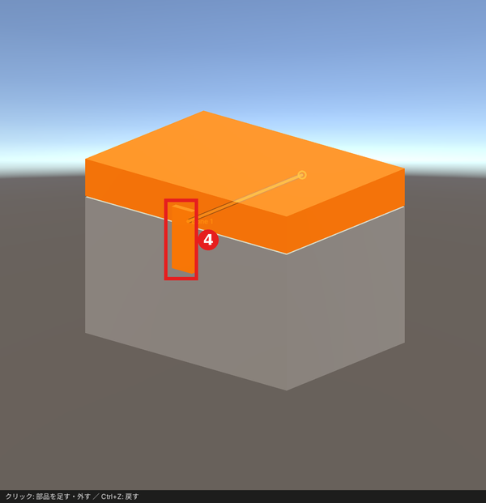
上の画像は、宝箱の留め金を足したところです。 オレンジの部品は、クリックすると外れます。 灰色の部品は、クリックすると足されます。 窓の下の知らせに、「部品を Bone 1 の動く所に足しました。」か、「部品を Bone 1 の動く所から外しました。」と出ます。
ブラシで直します
-
［道具］で、［ブラシ］を選びます。
-
［足す］［減らす］［ぼかす］から、1 つ選びます。
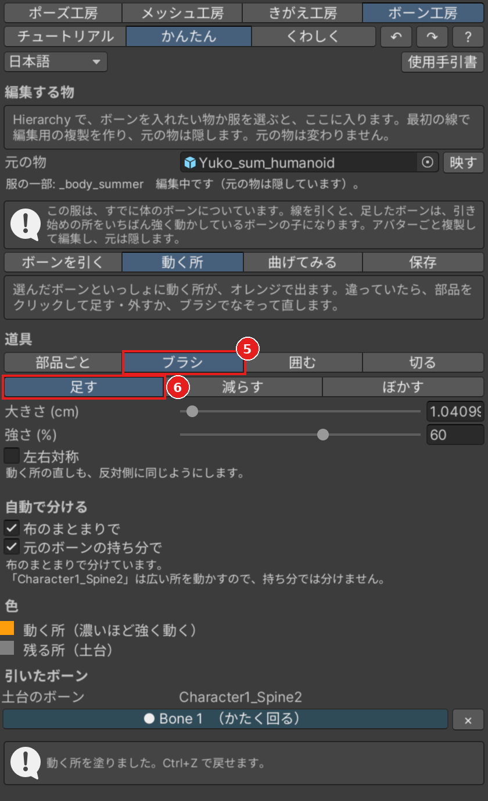
-
シーンで、直したい所をなぞります。 下の画像は、ゆうこの胸のリボンで、垂れの先をなぞったところです。
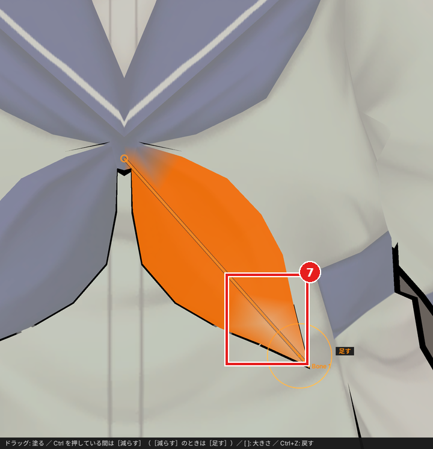
- ［足す］は、なぞった所を、選んだボーンといっしょに動かします。
- ［減らす］は、なぞった所を、選んだボーンから離します。
- ［ぼかす］は、なぞった所の動き方を、まわりとなじませます。
Ctrl を押している間は、［足す］と［減らす］が入れ替わります。 ［ぼかす］は、そのままです。 ブラシの輪の横に、いまの塗り方が出ます。
ブラシの大きさは、窓の［大きさ (cm)］で変えます。 シーンでは、［ と ］のキーでも変えられます。 ［強さ (%)］は、1 回なぞるごとの効き方です。 弱くすると、少しずつ変わります。
左右そろえて直します
［左右対称］をオンにすると、反対側にも、同じように直します。 ［左右対称］をオフにして引いたボーンは、反対側にボーンがありません。 それを［左右対称］をオンにして塗ると、「反対側にボーンが無いので、左右対称では塗れません。」と知らせます。 そのときは、［左右対称］をオンにして、線を引き直します。
やり直します
1 回のなぞりは、Ctrl+Z 1 回で戻ります。 部品をクリックしたときも、1 回で戻ります。
服のほかの所まで動くのを止める
服のリボンに線を引いたら、シャツまでオレンジになった。 そんなときの直し方です。 止める方法は、3 つあります。 手順 1〜2 のあとで、やり方を 1 つ選びます。 下の画像の左は、［自動で分ける］の印をはずして、結び目の上から引いたようすです。 右は、境目の線で止めたあとです。
はじめに（どのやり方でも、まずすること）
「自動で分ける」は、服の一部を編集しているときだけ出ます。 どのやり方も、［動く所］タブで使います。 はじめに、次の 2 つをします。
-
窓の［動く所］タブを押します。
-
直したいボーンを選びます。
やり方 1: 自動で分けます
-
「自動で分ける」で、［布のまとまりで］と［元のボーンの持ち分で］をたしかめます。 印がついていなければ、つけます。 ついていても広がるときは、やり方 2 か 3 へ進みます。
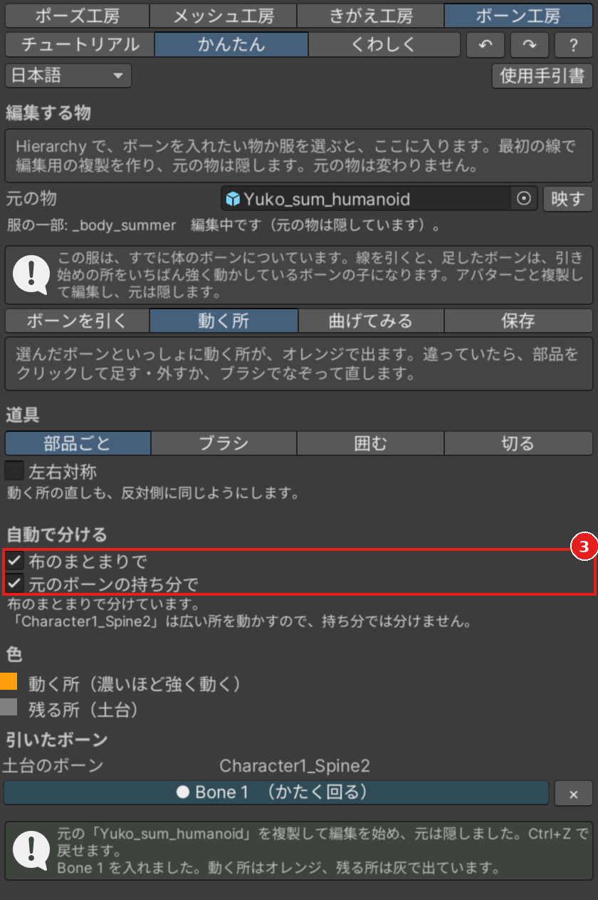
- ［布のまとまりで］は、布のまとまりを越えて、動く所を広げません。胸のリボンの垂れが、服の本体に広がらなくなります。
- ［元のボーンの持ち分で］は、線の引き始めのボーンが、もとから一部だけを動かしていたとき、その持ち分だけを動く所にします。 ゆうこの胸のリボンの土台のボーン「Character1_Spine2」は、広い所を動かします。 そのため、持ち分では分けません。
印をはずすと、服まで広がります。 だから、はじめは 2 つとも付いています。 変えると、動く所が作り直されます。 どの決め方を使ったかは、その下の文に出ます。 たとえば、「布のまとまりで分けています。」と出ます。 そのあとに、持ち分では分けない、という文も出ます。 Ctrl+Z でもどせます。
やり方 2: 囲んで決めます
先に、手順 1〜2 をすませます。
-
［道具］で、［囲む］を選びます。
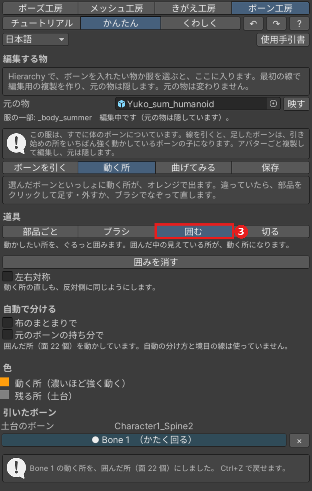
-
シーンで、オレンジにしたい所を、ぐるっと囲みます。 すると、垂れだけがオレンジになります。
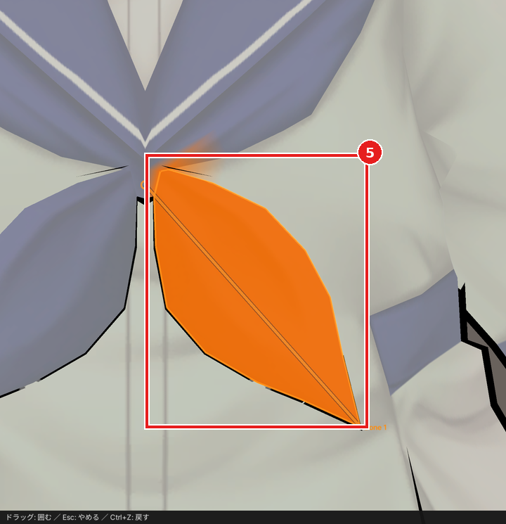
囲んだ中の、見えている所だけが、動く所になります。 画像は、囲んだあとです。「自動で分ける」の印は、付いたままです。 でも、自動の分け方と境目の線は使われません。 窓には、「囲んだ所（面 22 個）を動かしています。自動の分け方と境目の線は使っていません。」のように出ます。 やめたいときは、Esc を押します。 囲みを消すには、［囲みを消す］を押します。 自動の決め方にもどります。
やり方 3: 境目の線で止めます
先に、手順 1〜2 をすませます。
-
［道具］で、［切る］を選びます。
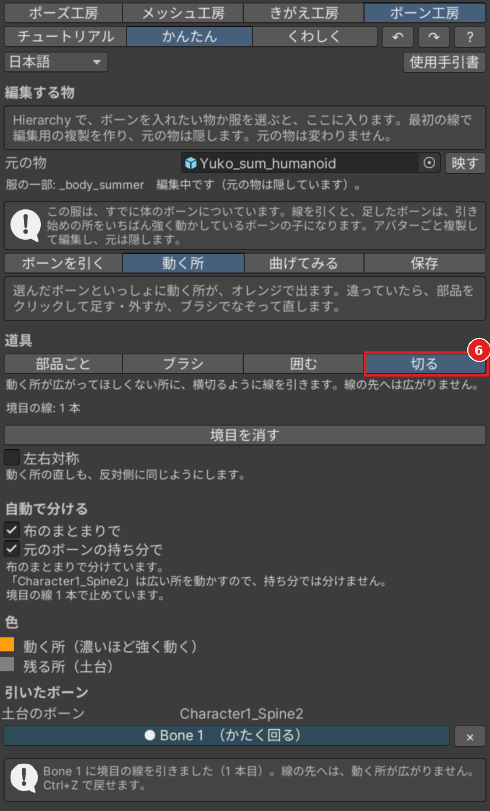
-
シーンで、広がってほしくない所を、横切るように線を引きます。
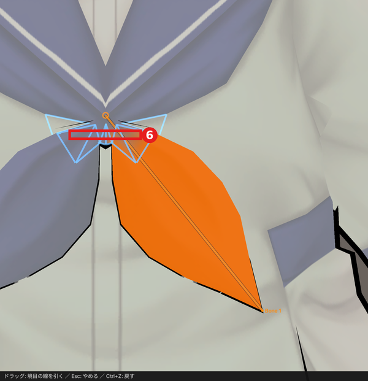
動く所は、ボーンを引いた側から広がり、この線で止まります。 線の向こう側は、動きません。 ［切る］では、「自動で分ける」の印は変わりません。自動の分け方に、境目の線が足されます。 窓に、「境目の線: 1 本」のように、本数が出ます。 線を全部消すには、［境目を消す］を押します。 動く所は、線を引く前にもどります。 Ctrl+Z でももどせます。
できないこと
- 長い線を、折れ曲がった布の上で引くと、動く所の一部が抜けることがあります。そのときは、「動く所を直す」の［部品ごと］やブラシで足します。
Prefab に保存してアバターで使う
ボーンを足した物を、新しい Prefab（プレハブ）に保存します。 Prefab は、Unity でなんども使える、部品の入れ物です。 保存した Prefab は、シーンに置いて使います。 元の物は、かわりません。
はじめての保存は、「はじめての練習」の手順 6〜8 とおなじです。 ここでは、保存先をかえるやり方と、保存したあとのことを書きます。
保存先を決めます
-
窓の［保存］タブを押します。
-
［保存先］のばしょをたしかめます。
保存先は、「Assets/BoneKoubo/名前/Model.prefab」の形で出ます。 なまえは、元の物のなまえです。 このなまえのフォルダーが新しくできて、その中に Prefab とメッシュが入ります。 おなじなまえのフォルダーがあるときは、「名前 1」のように番号が付きます。 ゆうこなら、「Assets/BoneKoubo/Yuko_sum_humanoid/Model.prefab」です。
-
ばしょをかえるときは、［変える］を押します。
保存先を選ぶ窓が開きます。 フォルダーのなまえを決めます。 選べるのは、Assets の中のばしょだけです。
保存します
-
［Prefab に保存］を押します。
ボーンを 1 本以上引くと、押せます。 曲げた形は、元にもどしてから、保存されます。 保存のとき、ボーンのつき方を自動で検査します。 窓の下の緑の知らせに、次の 3 行が出ます。
- 保存しました: 保存したばしょ。
- 変えた内容: 「ボーンを 1 本足した（Bone 1）」のように、足したボーンの本数となまえ。
- 検査: 問題なし（元の形にもどしてから保存しました）。
保存できないときは、「保存できませんでした。」と出ます。 ［変える］で保存先を選び直して、もう一度押します。
-
［Project で見る］を押します。
Project で、保存した Prefab（Model）が光ります。 おなじフォルダーに、メッシュも入っています。
服の一部を編集したときは、アバターごと保存されます。 「服のリボンにボーンを足す」で保存した Prefab も、アバターごとです。
アバターでつかいます
-
Project で、できた Prefab（Model）を、シーンの Hierarchy へドラッグします。
-
Hierarchy で、足したボーンを選びます。
-
Inspector（Unity の右にある、ものの設定の窓）を使います。 Rotation の値を変えて、ボーンをまわします。
置いた Prefab のなまえは、「Model」です。 ゆうこでは、足した「Bone 1」は、「Character1_Spine2」の中にあります。 もとからある Ribbon_L などと、おなじ並びです。 足したボーンのなまえは、保存したときの「変えた内容」に出ています。
ボーンをまわすと、動く所が動きます。 下の画像は、置いた Prefab で、Bone 1 をまわす前と後です。
左がまわす前、右がまわしたあとです。
作らないもの
- アニメーションは、作りません。つかう人が作ります。
- 揺れ（PhysBone など）は、作りません。つかう人が足します。
元の物のこと
保存したあとも、元の物は隠れたままです。 Hierarchy で、表示にもどせます。 編集用の複製も、シーンに残っています。 保存しないまま窓を閉じたり、ほかの物を選んだりすると、保存するかを聞かれます。
画面の説明: 上の帯
窓の、いちばん上の 3 段です。 どのタブでも、ここは同じです。
1 段目: 工房の切り替え
-
4 つのボタン: ［ポーズ工房］［メッシュ工房］［きがえ工房］［ボーン工房］が並びます。 光っているのが、いまの窓です。 ほかを押すと、その窓が前に出ます。 入っていない工房を押すと、「このUnityプロジェクトに未導入の機能です。」と出る窓が開きます。 窓が狭いと、1 段目が 2 段に分かれます。
2 段目: 使い方の切り替え
-
［チュートリアル］: 練習用の物で、使い方をじゅんに試します。
-
［かんたん］: はじめての人むけです。物の上に線を引くと、ボーンが入ります。
-
［くわしく］: ボーンの名前・親・ウェイト（ボーンがメッシュを動かす強さ）などを、細かく直す画面です。線を引くのは［かんたん］です。
切り替えても、物も、引いたボーンも残ります。 窓を開いたときも、Unity を起動したときも、［チュートリアル］から始まります。 編集の途中や、課題の途中なら、続きから出ます。
-
元に戻す: 左むきの矢のボタンです。Ctrl+Z と同じ働きです。
-
やり直す: 右むきの矢のボタンです。Ctrl+Y と同じ働きです。
-
［?］: ガイドを出したり、しまったりします。 ［かんたん］と、チュートリアルの課題の途中で出ます。課題の一覧と［くわしく］では出ません。
3 段目: 言語と手引書
-
言語の欄: 窓の文字を、3 つから選びます。日本語・English・한국어 です。
-
［使用手引書］: この手引書を、ブラウザでひらきます。
画面の説明: かんたん
［かんたん］は、4 つのタブでできています。 上から、物を選ぶ欄、タブ、中身の順に並びます。 窓の下には、いまの状態の文が出ます。
編集する物
タブの上の欄です。 Hierarchy で物か服を選ぶと、［元の物］の欄に入ります。 ［映す］を押すと、シーンビューがその物に合います。 最初の線で、編集用の複製ができます。 元の物は、隠れるだけで、変わりません。
物を選ぶまでは、［練習用の物］が出ます。 ［宝箱］［本］［眼鏡］［リボン］から選べます。 物を選ぶと、タブが出ます。
4 つのタブ
［ボーンを引く］: 物の上に線を引いて、ボーンを入れます。 ［見る向き］と［動き方］を選びます。 ［左右対称］もここです。
［動く所］: ボーンといっしょに動く所を、オレンジで見せます。 合わないときは、［部品ごと］［ブラシ］［囲む］［切る］で直します。
［曲げてみる］: ボーンの先をつかんで回し、曲がり方を確かめます。 ［角度］と［回る軸の向き］でも動かせます。 曲げた形は、保存されません。
［保存］: ［Prefab に保存］で、新しい Prefab にします。 ［保存先］は、［変える］で選び直せます。
窓の下の［引いたボーン］には、引いたボーンが並びます。 ×を押すと、そのボーンを消します。
操作ガイド
［?］を押すと、［編集する物］の欄の下に操作ガイドが出ます。 物を選ぶ・見る向きを合わせる・線を引く・曲げてみる・保存する、の 5 つの手順を、順に見せます。 ［閉じる］で、しまえます。 ［はじめから］で、ガイドの進み具合を戻します。引いたボーンは残ります。
シーンビューの下のヒントの行
シーンビューの下に、数行で、操作のヒントが出ます。 タブを替えると、文も替わります。 たとえば［ボーンを引く］では、「ドラッグ: 線を引いてボーンを入れる」と出ます。 ［曲げてみる］では、「ドラッグ: ちょうつがいを中心に回す」と出ます。 操作ガイドの手順がシーンのときは、行がオレンジになります。
［ボーンを引く］のヒントの行を、大きくして見せます。 長いので、2 段に分けています。
画面の説明: くわしく
［くわしく］は、ボーンの名前・親・ウェイトなどを、細かく直す画面です。線を引くのは［かんたん］です。 この手引書では、各タブの役目だけを書きます。 ふだんは、［かんたん］で足ります。
共通の所
上に、［編集する物］が出ます。 ［編集するメッシュ］と［選んでいるボーン］を選べます。 編集用の複製が無いときは、［元の物］と［編集用の複製を作る］と［練習用の棒を作る］だけが出ます。 その下に、5 つのタブが並びます。 窓の下には、［元の形に戻す］と［この編集を終える］があります。 ［元の形に戻す］は、試し曲げやアニメーションで動かしたボーンを、基準の姿勢にもどします。 ［この編集を終える］は、編集を終えます。保存していない変更があれば、保存するかを聞かれます。シーンの複製は残ります。 ［かんたん］で引いたボーンは、［くわしく］でも見えます。
5 つのタブ
-
［ボーン］: ボーンを足す・消す、名前や位置を直します。 Scene の球を押すと、ボーンを選べます。
-
［ウェイト］: ボーンがメッシュを動かす強さ（ウェイト）を直します。 ［ボーンを動かす］［頂点を選ぶ］［塗る］から道具を選びます。 青が 0、赤が 1 です。
-
［人型］: 人型のボーンを入れて、Humanoid の Avatar を作ります。 Generic のモデルでは使いません。
-
［動きの確認］: AnimationClip を再生して、ボーンの動きをたしかめます。 終わったら、［試すのをやめる］を押します。
-
［保存］: 新しいフォルダーに、Prefab・Mesh・Avatar・編集設定を保存します。 ［診断する］で、保存の前にたしかめられます。
それぞれのタブの先頭に、そのタブでできることが書いてあります。 ボタンの上に、マウスを置くと、短い説明が出ます。
困ったとき
Project に GP16_BoneKoubo フォルダが出ない
- どうなっているか: ［Import］を押す前に、窓を閉じたのかもしれません。
- どうすればよいか: 入れ方で、取り込み直します。
取り込んだあとに、赤いエラーが出る
- どうなっているか: 前の版が残っているのかもしれません。 Unity が 2022.3 でないのかもしれません。
- どうすればよいか: 前の版があれば、古いフォルダを消します。 入れ方の手順で、入れ直します。
［編集する物］の欄に入れられない
- どうなっているか: Project の中の物は、入りません。 Prefab も同じです。
- どうすればよいか: シーンに置いて、Hierarchy で選びます。
選んだ物に、ボーンを入れられない
- どうなっているか: ［編集する物］の下に、理由が出ます。 「メッシュが無いので…」は、メッシュが入っていないときです。 「この物には、ボーンを入れられません。」は、2 つのときです。 ボーンの無い SkinnedMeshRenderer と、表示を切った MeshRenderer です。
- どうすればよいか: Hierarchy で、服や体の物を選び直します。 表示を切った MeshRenderer は、Inspector で表示を入れます。
「ボーンの入ったメッシュが複数あります」と出る
- どうなっているか: アバター全体を選んだので、決められません。
- どうすればよいか: Hierarchy で、ボーンを足したい服（や体）のメッシュを選びます。
形が読めないと出る
- どうなっているか: モデルの Read/Write が切れています。
- どうすればよいか: Project でモデルを選びます。 Import Settings の Read/Write に、印を付けます。 ［Apply］を押します。
線を引いても、ボーンが入らない
- どうなっているか: 線が短いと、「線が短すぎます。…」と出ます。 物の上を通っていないと、「線が物の上を通っていません。」と出ます。
- どうすればよいか: 物の上で、ちょうつがいから長く引きます。
動く所が、広がりすぎている
- どうなっているか: 自動の動く所が、広すぎます。
- どうすればよいか: ［動く所］タブの［切る］を使います。 広げたくない所を、横切る線を引きます。 詳しくは、「服のほかの所まで動くのを止める」を見てください。
［動く所］タブの道具が灰色で、押せない
- どうなっているか: ボーンがまだ無いか、選んでいません。
- どうすればよいか: ボーンが無いと、「先に［ボーンを引く］でボーンを引いてください」と出ます。 選んでいないと、「下の一覧か、シーンでボーンを選ぶと直せます」と出ます。
元の物が見えなくなった
- どうなっているか: 最初の線で、元の物は隠れます。
- どうすればよいか: Hierarchy で、灰色の元の物を選びます。 Inspector の左上の印を付けます。
まちがえて、元に戻したい
- どうなっているか: まちがえました。
- どうすればよいか: Ctrl+Z を押します。 保存したファイルは、Project で消します。
保存できない
- どうなっているか: 「保存できませんでした。」と出ます。
- どうすればよいか: ［保存］タブの［変える］で、保存先を選び直します。 もう一度、［Prefab に保存］を押します。
保存しないでやめたい・「保存しますか？」と聞かれた
- どうなっているか: 保存していない編集が、あるままです。 ほかの物を選ぶ・Play・窓を閉じる、で聞かれます。
- どうすればよいか: やめるなら、［ボーン工房］の窓を閉じて、［保存しない］を押します。 複製が消えて、元の物が表示に戻ります。 一度保存していれば、複製は残ります。 ［編集に戻る］は、編集を続けます。
言葉の一覧
この手引書で使う言葉を、50 音順に並べました。
あ行
- アバター: 自分が使う、キャラクターのモデルです。
- インスペクター（Inspector）: Unity の右にある、ものの設定の窓です。
- ウェイト: ボーンがメッシュを動かす強さです。［かんたん］では、「動く所」と呼びます。
- 動く所: ボーンといっしょに動く、ものの部分です。シーンビューでは、オレンジで出ます。
- オレンジと灰色: オレンジは、動く所です。灰色は、動かない所（土台）です。
か行
- 角度: ［曲げてみる］タブのスライダーです。ボーンをどれだけ曲げるかを決めます。
- 囲む: ［動く所］タブの道具の 1 つです。ぐるっと囲んだ中の、見えている所が、動く所になります。
- かたく回る: ［動き方］の 1 つです。ふたや扉のように、形を変えずに、ちょうつがいを中心に回ります。
- かんたん: 窓の上の帯のタブの 1 つです。線を引いて、ボーンを入れます。
- 切る: ［動く所］タブの道具の 1 つです。広げたくない所に線を引くと、動く所が、その先へ広がりません。
- くわしく: 窓の上の帯のタブの 1 つです。ボーン、ウェイト、人型、動きの確認、保存を、細かく直せます。
さ行
- 境目の線: ［動く所］タブの［切る］で引く線です。動く所は、線の先へは広がりません。
- 左右対称: 片側の操作を、反対がわにもおなじようにすることです。
- シーンビュー: Unity の真ん中にある、ものを見る画面です。
- 操作ガイド: ［編集する物］の下に出る、次にすることの案内です。
た行
- チュートリアル: 練習用の物で、使い方を順番に試す課題です。窓の上の帯のタブの 1 つです。
- ちょうつがい: ふたや扉が回る所です。ボーンは、ここから先へ引きます。
- 続けて引く: ボーンの先から、さらに線を引いて、ボーンをつなげることです。
- 土台のボーン: 足したボーンのつながり先の、もとのボーンです。［引いたボーン］の見出しのすぐ下（一覧の上）に出ます。服の一部のときだけ出ます。
は行
- ヒエラルキー（Hierarchy）: Unity の左にある、置いてあるものの一覧です。
- 人型（Humanoid）: 人の形のボーンの決まりです。［くわしく］の［人型］タブで使います。
- 複製: 元のものをコピーした、編集用のものです。最初の線を引くときにできて、元のものは隠れます。
- 部品: ものの中の、つながった 1 つのかたまりです。［部品ごと］では、クリックで動く所に足したり外したりします。
- ブラシ: シーンビューでなぞって、動く所を足したり、減らしたり、ぼかしたりする道具です。
- プレハブ（Prefab）: 作ったものを、ひとまとめに残しておくファイルです。
- プロジェクト（Project）: Unity の下にある、ファイルの一覧です。
- 保存先: ［Prefab に保存］で、Prefab とメッシュが入る場所です。
- ボーン: ものを動かすための芯です。
ま行
- 曲げてみる: 引いたボーンを動かして、動き方を確かめるタブです。曲げた形は、保存されません。
- 回る軸の向き: ［曲げてみる］タブのスライダーです。ボーンが回る軸の向きを、-90 度から 90 度で変えます。
- メッシュ: ものの形をつくる、面の集まりです。メッシュの入っていない物には、ボーンを入れられません。
- 元の物: 最初に選んだ物です。複製ができると隠れますが、変わりません。
や行
- やわらかく曲がる: ［動き方］の 1 つです。ボーンを何本かつなげて、つなぎ目でなめらかに曲がります。
- 横から: シーンビューを、横から見る向きにする操作です。チュートリアルの宝箱では、自動でこの向きになります。
ら行
- Read/Write: モデルの設定の 1 つです。印が付いていないと、メッシュの形を読めません。